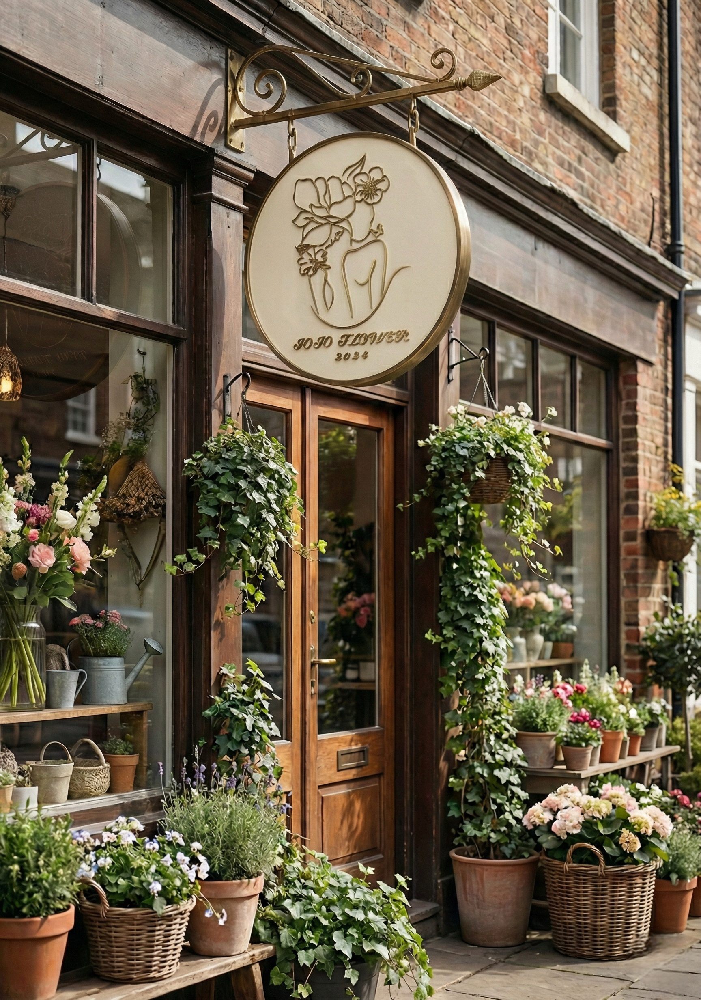
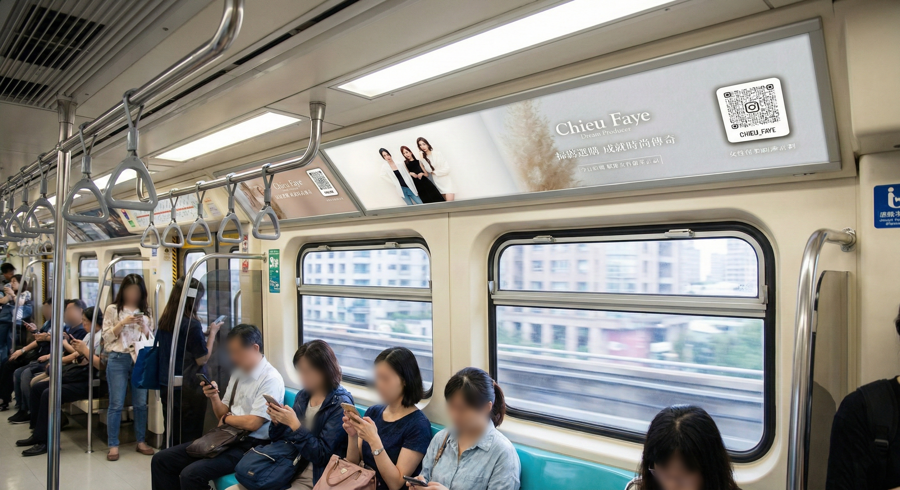
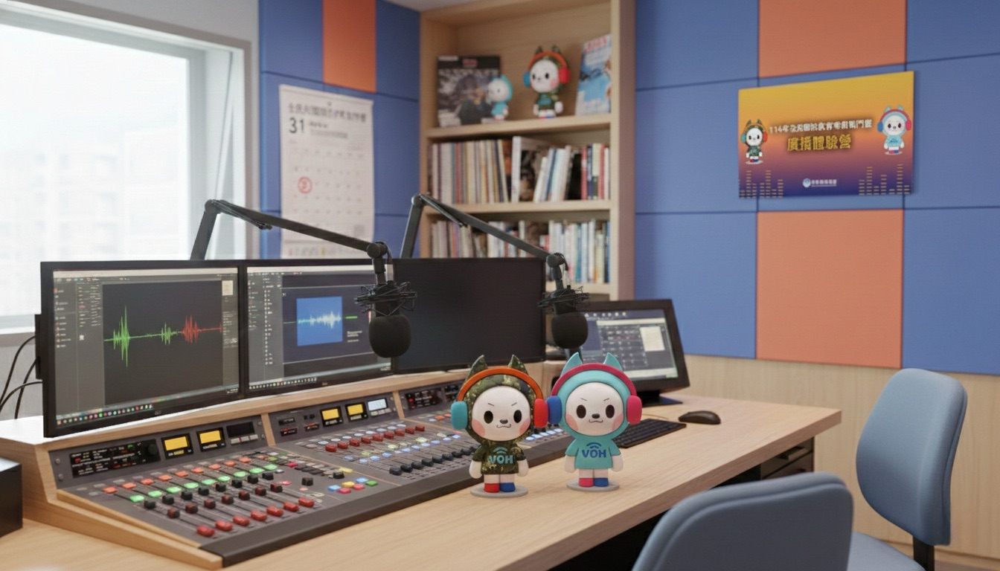
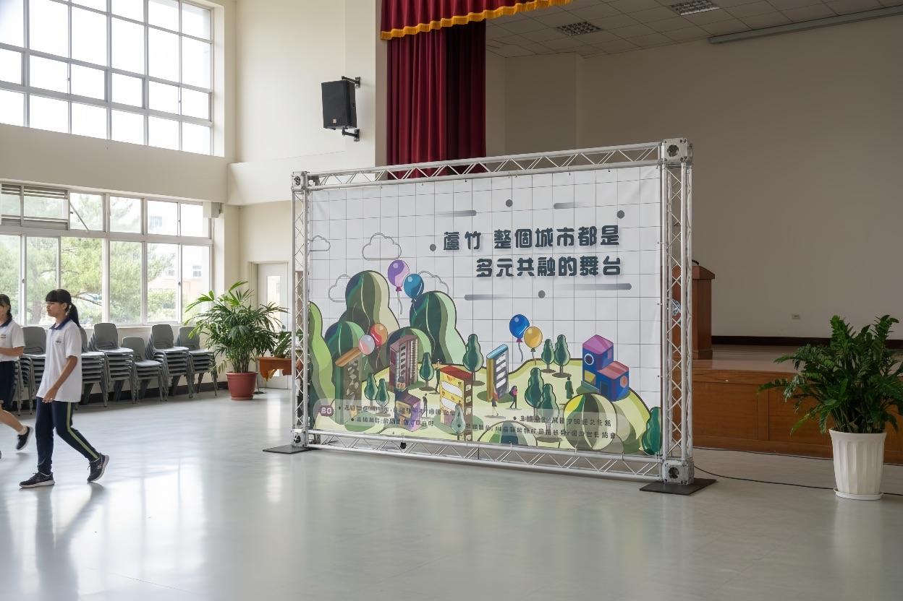

02 / Work
Selected Works, Curated.
我把作品整理成可快速比較的展示方式：你可以先看 Featured（代表作），再用篩選快速瀏覽全部作品。每個作品都附上 Role / Deliverables / Impact，讓作品更像解決方案，而不只是圖集。
Featured

JOJO FLOWER 品牌視覺設計
Role
Brand Visual Designer
Deliverables
Logo 系統、名片、招牌、包裝、圍裙應用
Impact
建立溫柔高級的品牌辨識與一致延展

Chieu Faye：捷運廣告視覺規劃
Role
Campaign Visual Planner
Deliverables
車廂廣告 KV、標語比例與掃碼位置優化
Impact
動態環境下維持高識別與視覺停留點效率

漢聲電台：數位轉型規劃
將「傳統廣播內容」轉譯為更容易被年輕族群吸收的視覺內容，並透過 AI 工作流降低重複工時、提高一致性。
Role
Content & Visual Strategist
Deliverables
轉錄工作流、內容策劃、雜誌感圖文版型
Impact
提高產出效率與內容一致性，擴展觸及族群
All Works
JOJO FLOWER 品牌視覺設計
Role：Brand Visual Designer
Deliverables：Logo 系統、名片、招牌、包裝、圍裙
Impact：建立溫柔高級的品牌辨識
逸角工程：品牌視覺識別系統設計
Role：Identity System Designer
Deliverables：Logo 概念、名片、制服/周邊延展
Impact：提升高端信賴感與品牌深度
Chieu Faye：捷運廣告視覺規劃
Role：Campaign Visual Planner
Deliverables：KV、標語比例、掃碼位置優化
Impact：動態場景仍保持高識別度

老店翻新：早稻田日式涮涮鍋
Role：Brand Identity Designer
Deliverables：Logo、紙袋、封口貼、Icon 系統
Impact：建立新舊融合的專業溫馨感
漢聲電台：數位轉型規劃
Role：Content & Visual Strategist
Deliverables：轉錄流程、雜誌感社群版型、內容策劃
Impact：AI 促進效率與一致性，吸引年輕族群

文化部：蘆竹社區營造計畫
Role：Illustrator & Layout Designer
Deliverables：地標插畫、Icon 系統、刊物排版
Impact：複雜資訊轉譯為易讀且有故事感的版面
No works found